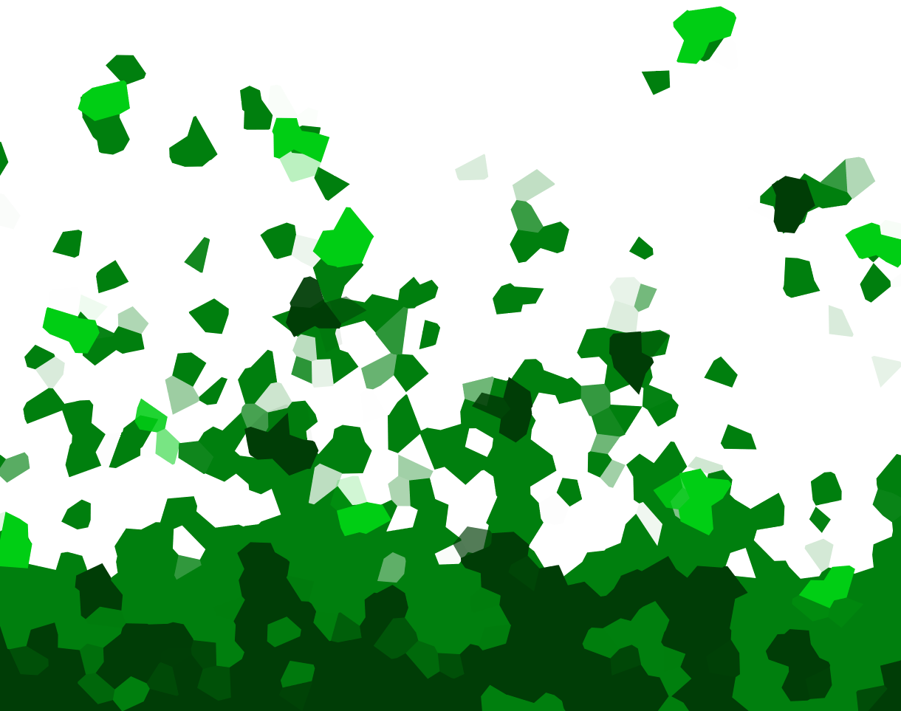

Hardboiled
Het is snikheet in die godverdomde bus. Stinkend zweet vermengd met de geur van klamme jassen en natte hond. Mijn zoon slaapt. Goddank. Een hardnekkige kater bonkt tegen mijn slapen. Flashback naar de avond ervoor. Een fles goedkope whiskey en oude kaaskoekjes.
Ik stap uit. Centraal Station, de anus van Amsterdam. Pneumatisch geboor trilt zich een weg naar mijn buis van Eustachius. De koppijn verergert. Bouwputten. Overal bouwputten. Amsterdam is één grote, gapende open wond hier. Heiende heipalen beuken gezellig mee op het ritme van mijn kloppende kater. Ik ben al een miezerige week op zoek naar Stijloefeningen van die godverdomde klootzak van een Raymond ‘De Aal’ Queneau. Het miezert zachtjes. Ik trek m’n kop in m’n kraag en balanceer over de natte planken langs de bouwputten.
De bibliotheek. Dit gebouw herbergt nogal wat lijken. Ik weet van minstens twee kickboxers en een mislukte bruiloftszanger dat ze hier zijn ingemetseld. Ik kijk naar boven. Reik in mijn jaszak. Draai de dop van m’n zakflacon en neem een goede slok om mezelf moed in te drinken. En dan, een stem… zoeter dan de zoetste honing. Ze verontschuldigt zich. Ik kijk om. Een godin met ravenzwarte krullen. In gebroken Engels vraagt ze waar het postkantoor is. Ach, meisje toch, je moest eens weten. Vraag het niet aan mij. Zoek iemand anders. Ik snuif haar geur op, bijna niet meer waarneembaar dankzij de wind. Het postkantoor is weggevaagd. Ik zeg dat ze in de Raadhuisstraat moet zijn. Een auto met een Frans nummerbord rijdt achteruit. De Godin Met De Zwarte Krullen kijkt om. Lichte paniek. Ik glimlach. Zij glimlacht. Droevig. Het moment bevriest. Duizend uren lang. Zij breekt eruit. Als een kuiken uit het ei. En rent achter de auto aan. Vaarwel.
Binnen. Tweede verdieping. Bij de boeken van Queneau. Ze staan rustig naast elkaar. Maar Stijloefeningen is nergens te bekennen. Queneau waar ben je? Hufter. Ik kijk voor de zekerheid bij de P en de R. Maar niks. Godverdomme niks. De laffe chien is ’m gepeerd. Met de staart tussen de benen. Ik tik het in op de computer. ‘Stijloefeningen, Raymond Queneau’. ‘Minstens één exemplaar aanwezig,’ zegt de computer. Ik kijk nogmaals. Niks. Ik haal er een medewerker bij. De lijer kijkt mee. Ziet niks. Haalt z’n schouders op. Ik kan het rambam krijgen. En anders moet ik even een mailtje sturen naar het magazijn. Daar moeten ze nog een exemplaar hebben. Ik mail naar het magazijn. Beleefd. Afstandelijk. Professioneel. Ik wacht. Kwartier later. Mail terug. Er is nog één exemplaar aanwezig. Op de tweede verdieping. Tussen de andere romans. Er knapt iets in me.
